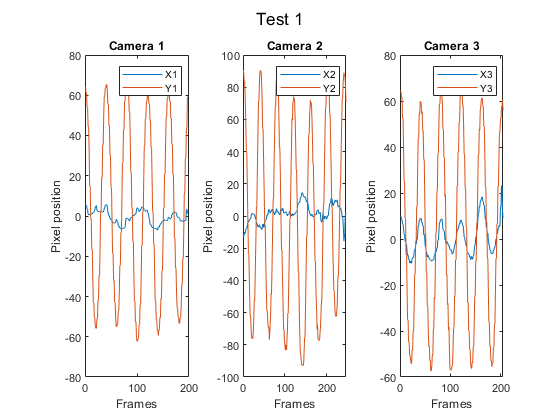
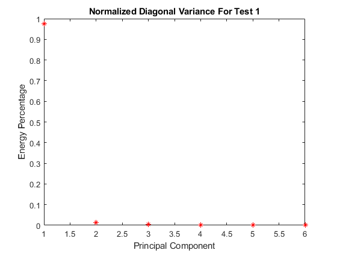
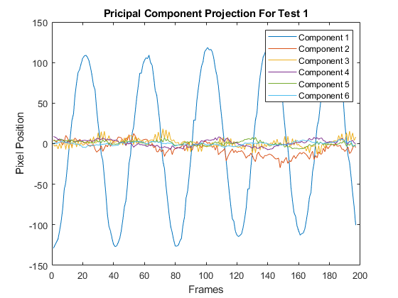

Contents
clc; clear all; close all
Load test 1 data
load('cam1_1.mat')
load('cam2_1.mat')
load('cam3_1.mat')
Obtain the x and y variable data points
numFrames11 = size(vidFrames1_1, 4);
numFrames21 = size(vidFrames2_1, 4);
numFrames31 = size(vidFrames3_1, 4);
x11 = zeros(numFrames11, 1);
y11 = x11;
bottom = 430;
top = 190;
left = 300;
right = 390;
for i = 1 : numFrames11
X11 = double(rgb2gray(vidFrames1_1(:, :, :, i)));
X11(:, 1:left) = 0;
X11(:, right:end) = 0;
X11(1:top, :) = 0;
X11(bottom:end, :) = 0;
[M, I] = max(max(X11));
[row, col] = find(X11 >= 0.9*M);
x11(i) = mean(col);
y11(i) = mean(row);
end
x11 = x11 - mean(x11);
y11 = y11 - mean(y11);
[M, I] = max(y11(1:50));
x11 = x11(I:end);
y11 = y11(I:end);
figure(1)
set(gca, 'FontSize', 15)
sgtitle('Test 1');
subplot(1, 3, 1)
plot(x11);
hold on;
plot(y11);
legend('X1', 'Y1');
title('Camera 1');
xlabel('Frames');
ylabel('Pixel position');
x21 = zeros(numFrames21, 1);
y21 = x21;
bottom = 370;
top = 100;
left = 250;
right = 340;
for i = 1 : numFrames21
X21 = double(rgb2gray(vidFrames2_1(:, :, :, i)));
X21(:, 1:left) = 0;
X21(:, right:end) = 0;
X21(1:top, :) = 0;
X21(bottom:end, :) = 0;
[M, I] = max(max(X21));
[row, col] = find(X21 >= 0.95*M);
x21(i) = mean(col);
y21(i) = mean(row);
end
x21 = x21 - mean(x21);
y21 = y21 - mean(y21);
[M, I] = max(y21(1:50));
x21 = x21(I:end);
y21 = y21(I:end);
subplot(1, 3, 2)
plot(x21);
hold on;
plot(y21);
legend('X2', 'Y2');
title('Camera 2');
xlabel('Frames');
ylabel('Pixel position');
x31 = zeros(numFrames31, 1);
y31 = x31;
bottom = 460;
top = 240;
left = 280;
right = 490;
for i = 1 : numFrames31
X31 = double(rgb2gray(vidFrames3_1(:, :, :, i)));
X31(:, 1:left) = 0;
X31(:, right:end) = 0;
X31(1:top, :) = 0;
X31(bottom:end, :) = 0;
[M, I] = max(max(X31));
[row, col] = find(X31 >= 0.9*M);
y31(i) = mean(col);
x31(i) = mean(row);
end
x31 = x31 - mean(x31);
y31 = y31 - mean(y31);
[M, I] = max(y31(1:50));
x31 = x31(I:end);
y31 = y31(I:end);
subplot(1, 3, 3)
plot(x31);
hold on;
plot(y31);
legend('X3', 'Y3');
title('Camera 3');
xlabel('Frames');
ylabel('Pixel position');
saveas(gcf, 'Position_Test1.jpg')

Reshape data
n = min([length(y11), length(y21), length(y31)]);
X = [x11(1:n)'; y11(1:n)'; x21(1:n)'; y21(1:n)'; x31(1:n)'; y31(1:n)'];
[U, S, V] = svd(X/sqrt(n - 1), 'econ');
lambda = diag(S).^2;
Y = U'*X;
figure(2)
set(gca, 'FontSize', 10)
lambdaSum = sum(lambda);
plot(lambda./lambdaSum, 'r*');
title('Normalized Diagonal Variance For Test 1');
xlabel('Principal Component');
ylabel('Energy Percentage');
saveas(gcf, 'Variance_Test1.jpg');
figure(3)
set(gca, 'FontSize', 10)
plot(Y(1, :));
hold on;
plot(Y(2, :));
plot(Y(3, :));
plot(Y(4, :));
plot(Y(5, :));
plot(Y(6, :));
legend('Component 1', 'Component 2', 'Component 3', 'Component 4', 'Component 5', 'Component 6');
title('Pricipal Component Projection For Test 1');
xlabel('Frames');
ylabel('Pixel Position');
saveas(gcf, 'Projection_Test1.jpg');
 